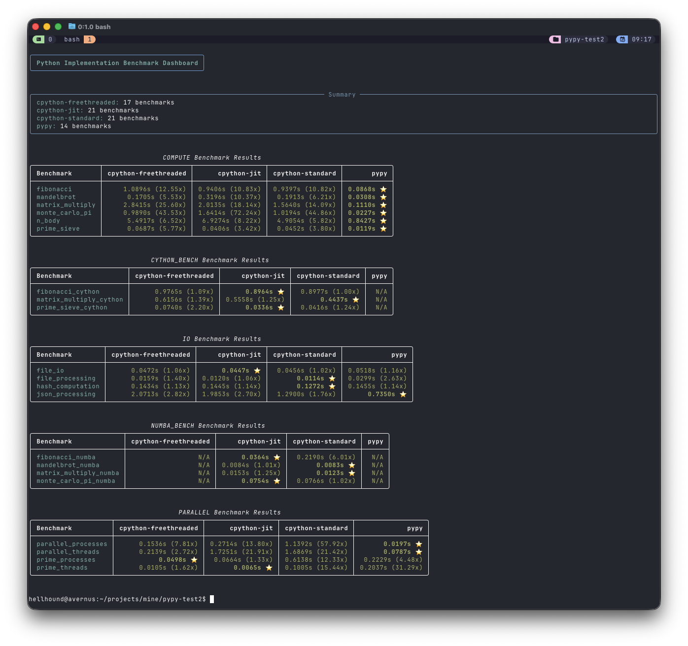

Benchmarking Python Flavors: PyPy, CPython (standard / free-threaded / jit), Cython & Numba#
Now that Python 3.14 is out, let’s compare how CPython fares against PyPy! Python has many implementations and optimization tools. This repository contains a focused benchmarking suite that compares several of them across three workload classes — compute-bound, I/O-bound, and parallel workloads. The goal of this article is to explain what was measured, how the experiments are organized, and what the results typically show when you run the suite.
Note
Repository jpchauvel/pypy-test2
Benchmarking setup#
Repository: local benchmarking suite (see
benchmarks/).Runner:
benchmarks/runner.pyorchestrates suites and writes JSON results (defaultresults/*.json).Suites:
Compute:
benchmarks/compute.pyI/O:
benchmarks/io.pyParallel:
benchmarks/parallel.pyCython:
benchmarks/cython_bench.py(loadsbenchmarks/cython_funcs.pyxif built)Numba:
benchmarks/numba_bench.py(requires NumPy + Numba)
How to run locally:
Build Cython extensions (optional):
cd benchmarks && python setup.py build_ext --inplaceRun suite:
python benchmarks/runner.py --flavor local --output results/local_results.json
Docker images and make targets are provided to reproduce different Python builds (see
docker/andMakefile).
What the benchmarks measure#
Compute (heavy CPU):
fibonacci— recursive Fibonacci (n=35)matrix_multiply— naive triple-loop matrix multiply (300×300)prime_sieve— Sieve of Eratosthenes (limit=1_000_000)monte_carlo_pi— Monte Carlo π estimation (5_000_000 iterations)mandelbrot— Mandelbrot set generation (400×300, max_iter 128)n_body— N-body gravitational simulation (500 bodies, 50 steps)
I/O:
file_io— write/read sequential file (50 MB)file_processing— create/read many small fileshash_computation— MD5/SHA1/SHA256 over ~30 MBjson_processing— many JSON serialize/deserialize runs
Parallel:
parallel_threads— CPU-heavy tasks viaThreadPoolExecutorparallel_processes— CPU-heavy tasks viaProcessPoolExecutorPrime checking over ranges using threads and processes
Cython and Numba variants provide compiled/JITed alternatives for compute workloads:
Cython targets:
fibonacci_cython,prime_sieve_cython,matrix_multiply_cython(falls back to Python functions if extension not available)Numba targets (requires NumPy + Numba):
fibonacci_numba,matrix_multiply_numba,monte_carlo_pi_numba,mandelbrot_numba
How timing is done#
Each benchmark executes each test multiple times (default 3) and reports
min,max,avgand individualtimes.numba_bench.pyexplicitly calls the function once before timing to trigger compilation; other suites generally run the test directly, so JITs may experience warmup effects unless the suite is invoked repeatedly.
High-level findings (summary of expected behavior)#
PyPy (tracing JIT)
Excels on long-running, pure-Python compute workloads where hot loops are stable (often multiple times faster than CPython for these cases after warmup).
Warmup matters: initial runs may be slower until the tracer optimizes hot paths.
C-extension compatibility is more limited than CPython, so Cython/Numba benchmarks are not applicable under PyPy in this suite.
CPython Standard
Baseline: broadest compatibility with C extensions (NumPy, Numba, Cython).
For pure-Python loops, typically slower than PyPy; for tasks that delegate work to C (NumPy, hashlib, file I/O), CPython is competitive.
CPython Free-Threaded (
--disable-gil, experimental)Enables true multi-threaded CPU parallelism (threads can run in parallel).
Expect improved throughput for
parallel_threadsCPU-bound workloads versus CPython standard (which is limited by the GIL).This build is experimental and may have different behavior or compatibility constraints.
CPython with experimental JIT
May provide modest speedups for some compute workloads but is newer/less mature than PyPy’s tracing JIT.
Numba (on CPython)
Very fast for NumPy-friendly numerical kernels when using
@jit(nopython=True).Often outperforms both CPython and PyPy for matrix ops and Monte Carlo-style numerical loops because Numba compiles loops to optimized machine code and leverages vectorized operations.
Cython
Compiled code that can give large speedups when functions and data structures are typed (C-level variables, memoryviews, typed arrays).
The repo’s
cython_funcs.pyxusescdef intand Python lists; it demonstrates benefit from compilation but could be faster if it used typed memoryviews or contiguous C arrays.
Per-suite takeaways#
Compute
PyPy usually shines on pure-Python recursive/loop-heavy tasks (e.g., recursive Fibonacci, naive matrix loops) after JIT warmup.
Numba + NumPy typically dominates numerical matrix operations and Monte Carlo that are expressed with arrays or simple number loops.
Cython provides reliable speedups for hotspots, with the largest gains when low-level typing and memoryviews are used.
I/O
I/O benchmarks (file operations, hashing, JSON) are largely dominated by OS and C library performance; differences between interpreters are smaller.
CPython’s mature C-based stdlib often gives predictable performance for I/O and hashing.
Parallel
Threaded CPU tasks on standard CPython are limited by the GIL; use processes or a free-threaded CPython build if you need threaded parallel CPU work.
Process-based parallelism (multiprocessing / ProcessPoolExecutor) scales well across interpreters because it uses separate processes, at the cost of pickling and inter-process overhead.
Notable implementation details that affect results#
Monte Carlo implementation in
compute.pyuses ahash(...)-based pseudo-random expression rather thanrandom.random(); this may produce different performance and determinism characteristics across Python builds (hash randomization can vary).Cython implementation in
cython_funcs.pyxusescdeffor some variables but still builds Python lists — converting to typed memoryviews / contiguous buffers increases Cython’s performance substantially.Numba benchmarks require NumPy and Numba;
numba_bench.pyguards execution and prints a skip message if dependencies are missing.runner.pydecides which suites to run based on flavor; PyPy runs the pure-Python suites but skips Numba/Cython-specific suites where appropriate.
Example usage and results storage#
Run locally:
python benchmarks/runner.py --flavor local --output results/local_results.json
Results are JSON objects containing the flavor and per-suite results, for example:
results/cpython-standard_results.jsonresults/pypy_results.json
Each benchmark entry includes
name,min,max,avg, andtimes.
The results#

Conclusion#
This benchmark suite is a practical way to compare interpreter/runtime choices across realistic workloads:
Use PyPy to accelerate pure-Python compute-heavy applications where JIT warmup is acceptable.
Use Numba (on CPython) for high-performance numerical code leveraging NumPy.
Use Cython to optimize specific hotspots when you can add C-level typing and memoryviews.
For parallel CPU-bound tasks, choose process-based parallelism on standard CPython, or try a free-threaded CPython build when true threaded parallelism is required and compatible with your extensions.